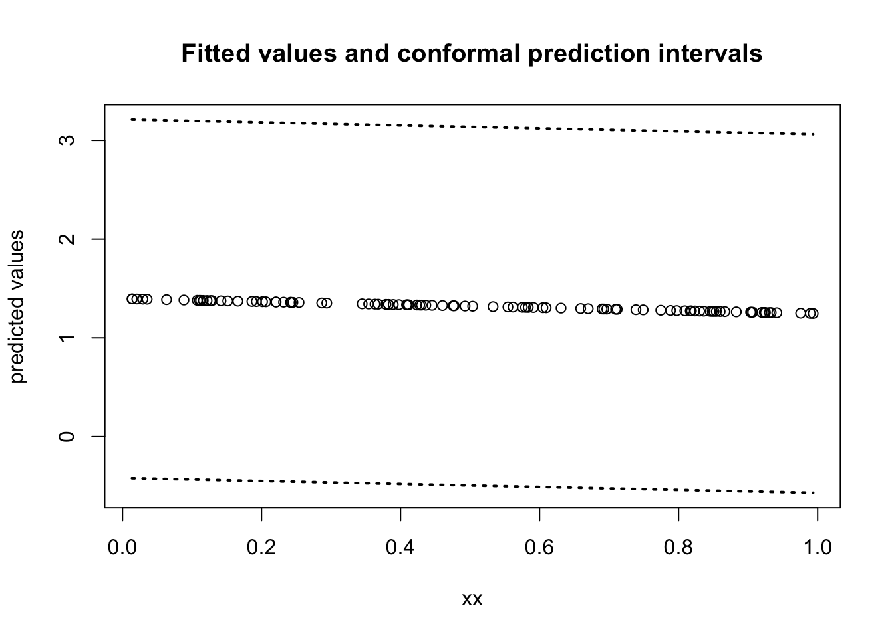

Chapter 9 Conformal Prediction
9.1 Confidence Intervals and Prediction Intervals
Confidence Intervals are intervals constructed to “cover” the parameter of a statistical model.
For example, consider a regression setting with data \((Y_{i}, x_{i})\) for \(i = 1, \ldots, n\) whose distribution is assumed to be determined by \[\begin{equation} Y_{i} = \beta_{0} + \beta_{1}x_{i} + \varepsilon_{i}, \end{equation}\] where \(\varepsilon_{i} \sim \textrm{Normal}(0, \sigma^{2})\).
The usual \(95\%\) confidence interval for \(\beta_{1}\) is: \[\begin{equation} \hat{CI}(Y_{1}, \ldots, Y_{n}) = \Big[ \hat{\beta}_{1} - 1.96 \times \frac{\hat{\sigma}}{\sqrt{\sum_{i}x_{i}^{2} - n\bar{x}^{2}}}, \hat{\beta}_{1} + 1.96 \times \frac{\hat{\sigma}}{\sqrt{\sum_{i}x_{i}^{2} - n\bar{x}^{2}}} \Big] \end{equation}\]
This has \(95\%\) “coverage” of \(\beta_{1}\) in the sense that \[\begin{equation} P\Big\{ \beta_{1} \in \hat{CI}(Y_{1}, \ldots, Y_{n}) \Big\} = 0.95 \end{equation}\]
Practically, if you imagine that you had replicated outcomes \(Y_{1s}, \ldots, Y_{ns}\) for \(s = 1, \ldots, S\) generated from the same model, you should expect that your series of constructed confidence intervals \(\hat{CI}(Y_{1s}, \ldots, Y_{ns})\) should satisfy: \[\begin{equation} \frac{1}{S}\sum_{j=1}^{S} I\Big( \beta_{1} \in \hat{CI}(Y_{1s}, \ldots, Y_{ns}) \Big) \approx 1 - \alpha \end{equation}\]
- A quick simulation which confirms the coverage property of confidence intervals is:
nsims <- 1000 ## number of simulated data sets
n <- 100
xx <- runif(n)
beta0 <- 0.5
beta1 <- 1
cover <- rep(NA, nsims)
for(s in 1:nsims) {
Y <- beta0 + beta1*xx + rnorm(n)
mod_fit <- lm(Y ~ xx)
## Use method confint to get 95% confidence intervals for regression coefficients:
lower_ci <- confint(mod_fit)[2,1]
upper_ci <- confint(mod_fit)[2,2]
cover[s] <- ifelse(beta1 >= lower_ci & beta1 <= upper_ci, 1, 0)
}
mean(cover) ## Should be close to 0.95## [1] 0.95Prediction intervals for regression are a bit different than confidence intervals.
For prediction intervals, you usually imagine a “future observation” \(Y_{n+1}\) that come from the model \[\begin{equation} Y_{n+1} = \beta_{0} + \beta_{1}x_{n+1} + \varepsilon_{n+1}, \end{equation}\]
A \(100 \times (1 - \alpha)\) prediction interval \(\hat{PI}(x_{n+1})\) constructed from data \((Y_{1}, \mathbf{x}_{1}), \ldots, (Y_{n}, \mathbf{x}_{n})\) is supposed to have the following property: \[\begin{equation} P\Big( Y_{n+1} \in \hat{PI}(x_{n+1}) \Big) = 1 - \alpha \end{equation}\]
For the linear regression model with a single covariate, the standard \(95\%\) prediction interval has the form \[\begin{equation} \hat{\beta}_{0} + \hat{\beta}_{1}x_{n+1} \pm 1.96 \times \hat{\sigma}\sqrt{1 + (1,x_{n+1})^{T}(\mathbf{X}^{T}\mathbf{X})^{-1}(1, x_{n+1})} \end{equation}\]
9.2 Conformal Inference Procedure for Prediction Intervals
The split-sample conformal inference procedure works for the setting where you’re thinking of outcomes \(Y_{i}\) coming from the following model: \[\begin{equation} Y_{i} = f(\mathbf{x}_{i}) + \varepsilon_{i} \end{equation}\]
You do not need to know the form of \(f\).
\(f\) can just be the fitted values returned by a black box machine learning procedure.
- For example, \(f(\mathbf{x}_{i})\) could be the fitted values returned by running boosting or random forest.
- Let \(\mathcal{D}\) denote the training set.
- This contains data of the form \((\mathbf{x}_{i}, Y_{i})\)
The first step is to split this training set further into non-overlapping sets:
- \(\mathcal{D}_{1}\) - the indeces of a “proper” training set with \(n_{1}\) observations.
- \(\mathcal{D}_{2}\) - the indeces of a “calibration” set with \(n_{2}\) observations.
Using only data from \(\mathcal{D}_{1}\) apply your machine learning procedure to build a function \(\hat{f}_{\mathcal{D}_{1}}(\mathbf{x}_{i})\) that predicts \(Y_{i}\) from \(\mathbf{x}_{i}\).
For \(i \in \mathcal{D}_{2}\), define the calibration set absolute residuals \(R_{i}\) as \[\begin{equation} R_{i} = | Y_{i} - \hat{f}_{\mathcal{D}_{1}}(\mathbf{x}_{i})| \end{equation}\]
Compute the \(100 \times (1 - \alpha)\) quantile (usually \(\alpha = 0.05\)) of these calibration residuals \[\begin{equation} \hat{q}_{\mathcal{D}_{2}, \alpha} = \textrm{$1 - \alpha$ quantile from residuals} R_{i} \textrm{ such that } i \in \mathcal{D}_{2}. \end{equation}\]
Then, use the quantile \(\hat{q}_{\mathcal{D}_{2}}\) to form the conformal \((1 - \alpha)\) prediction set \[\begin{equation} \hat{C}_{n}( \mathbf{x} ) = \Big[\hat{f}_{\mathcal{D}_{1}}(\mathbf{x}) - \hat{q}_{\mathcal{D}_{2}, \alpha},\hat{f}_{\mathcal{D}_{1}}(\mathbf{x}) + \hat{q}_{\mathcal{D}_{2}, \alpha}\Big] \end{equation}\]
Applying the above 5 steps results in conformal prediction intervals that satisfies the following property \[\begin{equation} 1 - \alpha \leq P\Big( Y_{n+1} \in \hat{C}_{n}(\mathbf{x}_{n+1}) \Big| \textrm{obs. in proper train set}) < 1 - \alpha + \frac{1}{n_{2} + 1} \end{equation}\]
Remarkably, this interval is “distribution free”. - It does not assume that one has correctly specified the model for the outcomes.
The main assumption are that \((Y_{n+1}, \mathbf{x}_{n+1})\) is independent from \(((Y_{1}, \mathbf{x}_{1}), \ldots, (Y_{n+1}, \mathbf{x}_{n}))\) and that the joint distribution of \((Y_{n+1}, \mathbf{x}_{n+1})\) is the same as \((Y_{i}, \mathbf{x}_{i})\).
As an example, let’s try to generate a conformal prediction interval for a linear regression example:
First generate the data
- Note that the data are generate from the model $Y_{i} = \beta_{0} + \beta_{1}\sqrt{x_{i}} + \varepsilon_{i}$.
- We will fit the **"misspecified"** model $Y_{i} = \beta_{0} + \beta_{1}x_{i} + \varepsilon_{i}$, but the conformal inference procedure should still work. - Split this data set into a “proper” training set and calibration set
D1 <- sample(1:n, size=50)
D2 <- setdiff(1:n, D1)
proper_dat <- data.frame(Y=Y[D1], xx=xx[D1])
calibration_dat <- data.frame(Y=Y[D2], xx=xx[D2])- Using
D1, fit a linear regression model
- Get absolute residuals on calibration dataset
calibration_fitted <- predict(proper_mod, newdat=calibration_dat)
calibration_resids <- abs(calibration_dat$Y - calibration_fitted)- Get 95th quantile of these residuals
- We can now use
qhatto get prediction intervals for a “new dataset”
## Generate new dataset
n <- 100
xx_new <- runif(n)
beta0 <- 0.5
beta1 <- 1
Y_new <- beta0 + beta1*sqrt(xx) + rnorm(n)
newdataset <- data.frame(Y=Y_new, xx=xx_new)
### Construct prediction intervals as a n x 2 matrix
ConformalInterval <- matrix(NA, nrow=n, ncol=2)
ConformalInterval[,1] <- predict(proper_mod, newdat=newdataset) - qhat
ConformalInterval[,2] <- predict(proper_mod, newdat=newdataset) + qhat
print(head(ConformalInterval))## [,1] [,2]
## [1,] -0.5975258 2.894972
## [2,] -0.6498182 2.842679
## [3,] -0.4983627 2.994135
## [4,] -0.1504342 3.342063
## [5,] -0.5103764 2.982121
## [6,] -0.3879992 3.104498Plot fitted values and prediction intervals: 
You can check the prediction coverage of these intervals with the following code:
## This shouldn't be that far off 0.95, but there will be
## considerable variability since this is not a very large dataset
mean(Y_new > ConformalInterval[,1] & Y_new < ConformalInterval[,2])## [1] 0.949.3 Why does this work?
The main justification for the validity of this procedure comes from looking at the calibration residuals \(R_{i}\), for \(i \in \mathcal{D}_{2}\) and the test residual \(R_{n + 1} = | Y_{n+1} - \hat{f}_{\mathcal{D}_{1}}(\mathbf{x}_{n+1})|\).
Specifically, \(R_{n+1}, R_{i}, i \in \mathcal{D}_{2}\) is a collection of i.i.d random variables.
This is true because \(\hat{f}_{\mathcal{D}_{1}}(\mathbf{x})\) was built from the proper training set and …
The values of \(R_{i}\), for \(i \in \mathcal{D}_{2}\) only uses outcomes from the calibration dataset.
Because of the i.i.d. property the probability that \(R_{n+1}\) is less than the \(100(1 - \alpha)\) quantile of the residuals is very close to \(1 - \alpha\).
Because of this: \[\begin{eqnarray} P\Big( Y_{n+1} \in \hat{C}_{n}(\mathbf{x}_{n+1}) \Big| \mathcal{D}_{1} \Big) &=& P(\hat{f}_{\mathcal{D}_{1}} - \hat{q}_{\mathcal{D}_{2}, \alpha} \leq Y_{n+1} \leq \hat{f}_{\mathcal{D}_{1}} + \hat{q}_{\mathcal{D}_{2}, \alpha} \Big| \mathcal{D}_{1} \Big) \nonumber \\ &=& P(- \hat{q}_{\mathcal{D}_{2}, \alpha} \leq Y_{n+1} - \hat{f}_{\mathcal{D}_{1}} \leq \hat{q}_{\mathcal{D}_{2}, \alpha} \Big| \mathcal{D}_{1} \Big) \nonumber \\ &=& P( R_{n+1} \leq \hat{q}_{\mathcal{D}_{2}, \alpha} \Big| \mathcal{D}_{1} \Big) \nonumber \\ &\approx& 1 - \alpha \end{eqnarray}\]
9.4 An example with Boosting.
- First, generate example data:
n <- 2000
p <- 20
X0 <- matrix(rnorm(n*p), nrow=n, ncol=p)
## Baseline outcomes
beta0 <- c(1, -1, 2, -2, rep(0, 16))
Y0 <- X0%*%beta0 + rnorm(n)
## Outcomes at week x:
Y <- 0.3*Y0 + X0%*%beta0 + rnorm(n)
#########################
### Design matrix, we can use for analysis
X <- cbind(Y0, X0)- Split this data set into a “proper” training set and calibration set
D1 <- sample(1:n, size=1000)
D2 <- setdiff(1:n, D1)
proper_dat <- data.frame(Y=Y[D1], X[D1,])
calibration_dat <- data.frame(Y=Y[D2], X[D2,])- Using
D1, use boosting to
## Loaded gbm 2.1.9## This version of gbm is no longer under development. Consider transitioning to gbm3, https://github.com/gbm-developers/gbm3gbm_mod <- gbm(Y ~ ., data = proper_dat,
distribution = "gaussian", n.trees = 200, cv.folds=5)
## Find the best number of trees using cross-validation
best.iter <- gbm.perf(gbm_mod, method = "cv")
## [1] 186## Use boosting with best number of trees
gbm_mod_final <- gbm(Y ~ ., data = proper_dat,
distribution = "gaussian", n.trees = best.iter)- Get absolute residuals on calibration dataset
## Using 186 trees...- Get 95th quantile of these residuals
- We can now use
qhatto get prediction intervals for a “new dataset”
X0 <- matrix(rnorm(n*p), nrow=n, ncol=p)
## Baseline outcomes
beta0 <- c(1, -1, 2, -2, rep(0, 16))
Y0 <- X0%*%beta0 + rnorm(n)
## Outcomes at week x:
Y_new <- 0.3*Y0 + X0%*%beta0 + rnorm(n)
X_new <- cbind(Y0, X0)
##
newdataset <- data.frame(Y=Y_new, X_new)
### Construct prediction intervals as a n x 2 matrix
ConformalInterval <- matrix(NA, nrow=n, ncol=2)
ConformalInterval[,1] <- predict(gbm_mod_final, newdat=newdataset) - qhat## Using 186 trees...## Using 186 trees...- Check the prediction coverage:
## This shouldn't be that far off 0.95, but there will be
## considerable variability since this is not a very large dataset
mean(Y_new > ConformalInterval[,1] & Y_new < ConformalInterval[,2])## [1] 0.958